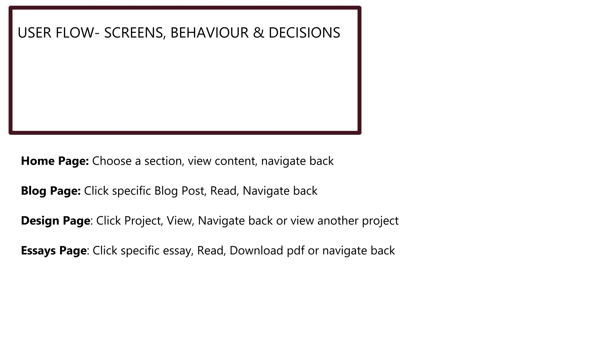
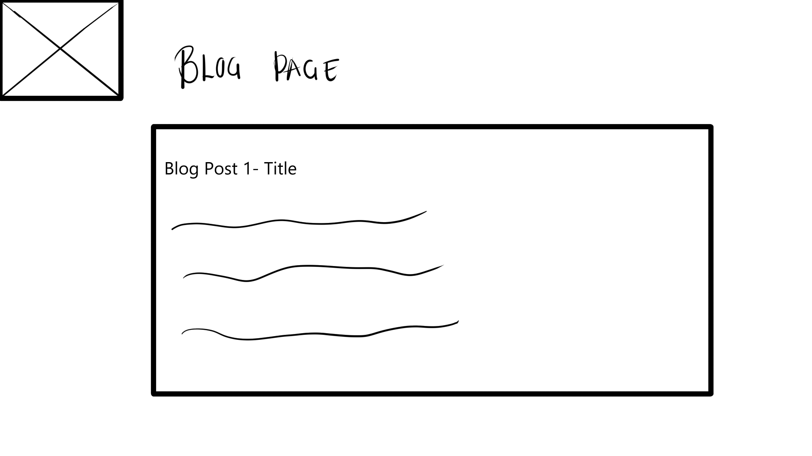
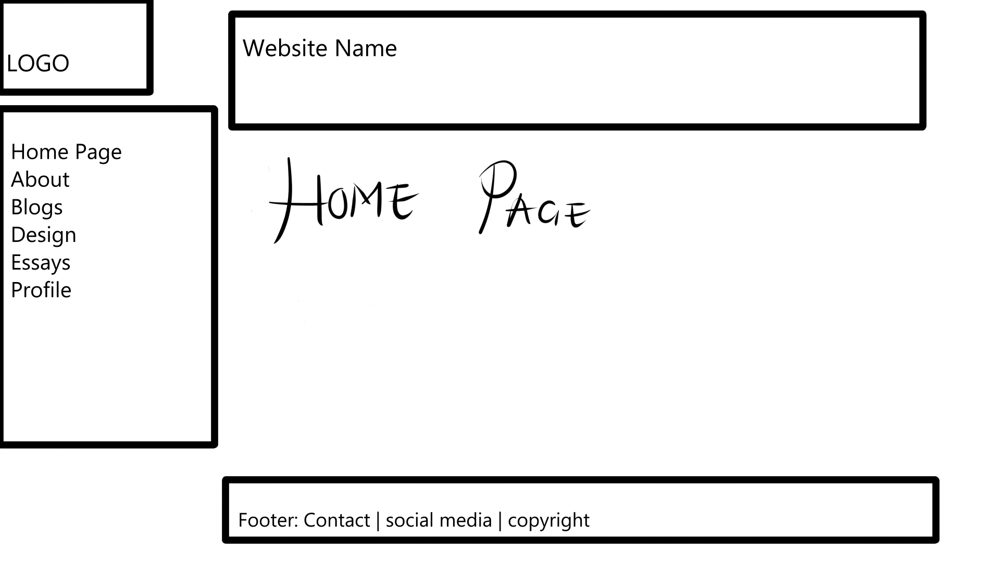

User alignment means having a specific target market and understanding your audience. At this very moment, I am target the general audience such as casual users who use the platform to search for data and for entertainment purposes.
Mapping Out Site Content, Experience and Interface Elements
Content:
Homepage: Includes website name, creator name, navigation
About: Includes information about the website, the creator and when the website was launched
Blog: Includes my weekly blog posts
Portfolio: Previous work or projects
Contact: Contact details such as phone number, email, social media links on where to find us
Interactivity between the user and website should be effective and flow well.
Navigation tools to move from one page to another will be available as well as a smooth navigation for mobile devices and laptops as well.
The above exercise helps me understand and plan my structure and URL scheme more, allowing room for changes every week and improvement. It allows me to engage with the good practice of semantic markup in order to improve accessibility for users and applying or simple practices that will be easy to maintain.


